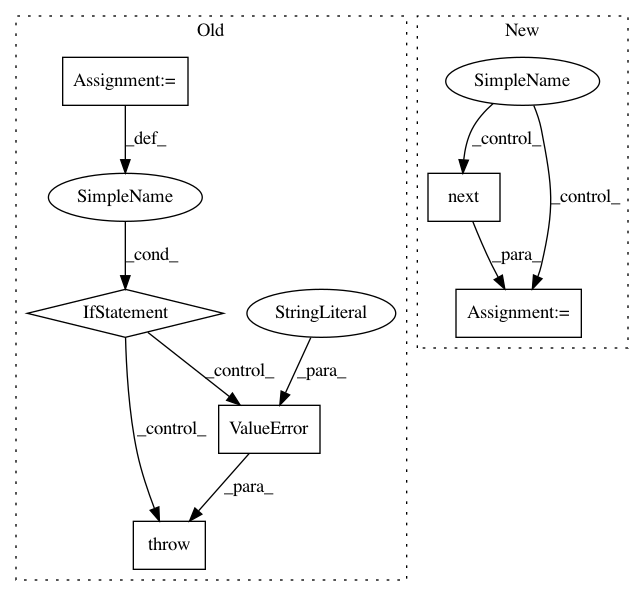

aae0ba842e293a63d6aaee45553712532054ef79,snips_nlu/slot_filler/data_augmentation.py,,get_noise_iterator,#Any#Any#Any#,70
Before Change
def get_noise_iterator(language, min_size, max_size):
subtitles = get_subtitles(language)
tokenized_subtitles = [tokenize(s) for s in subtitles]
tokenized_subtitles = [t for t in tokenized_subtitles if
len(t) >= max_size]
if len(tokenized_subtitles) == 0:
raise ValueError("Could not find long enought subtitles")
subtitles_it = cycle(np.random.permutation(tokenized_subtitles))
for tokens in subtitles_it:
size = random.choice(range(min_size, max_size + 1))
start = random.randint(0, len(tokens) - size)
After Change
size = random.choice(range(min_size, max_size + 1))
tokens = tokenize(subtitle)
while len(tokens) < size:
tokens += tokenize(next(subtitles_it))
start = random.randint(0, len(tokens) - size)
yield " ".join(t.value.lower() for t in tokens[start:start + size])
In pattern: SUPERPATTERN
Frequency: 3
Non-data size: 6
Instances
Project Name: snipsco/snips-nlu
Commit Name: aae0ba842e293a63d6aaee45553712532054ef79
Time: 2017-04-12
Author: clement.doumouro@snips.ai
File Name: snips_nlu/slot_filler/data_augmentation.py
Class Name:
Method Name: get_noise_iterator
Project Name: googledatalab/pydatalab
Commit Name: 5b48f9a9c097d26d395873044ceaa1a0b886682a
Time: 2017-06-14
Author: brandondutra@google.com
File Name: solutionbox/code_free_ml/mltoolbox/code_free_ml/analyze.py
Class Name:
Method Name: run_local_analysis
Project Name: googledatalab/pydatalab
Commit Name: 5b48f9a9c097d26d395873044ceaa1a0b886682a
Time: 2017-06-14
Author: brandondutra@google.com
File Name: solutionbox/code_free_ml/mltoolbox/code_free_ml/analyze.py
Class Name:
Method Name: run_cloud_analysis
Project Name: snipsco/snips-nlu
Commit Name: aae0ba842e293a63d6aaee45553712532054ef79
Time: 2017-04-12
Author: clement.doumouro@snips.ai
File Name: snips_nlu/slot_filler/data_augmentation.py
Class Name:
Method Name: get_noise_iterator